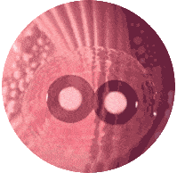

PRZYSPIESZA ODCHUDZANIE I PRZEKRACZA EFEKTY KETO DIETY o 3 razy!
KETO-DIETA ODCHUDZANIE Z RYZYKIEM UTRATY ZDROWIA?
KETO-DIETA - JEDNA Z NAJBARDZIEJ SKUTECZNYCH METOD ODCHUDZANIA.
Oznacza to całkowite odrzucenie lub maksymalne ograniczenie spożywanych węglowodanów, które po rozkładzie na glukozę przekształcają się w tkankę tłuszczową. W ciągu około 7-10 dni takiej diety ciało wchodzi w stan ketozy i zaczyna wytwarzać ciała ketonowe, które przyczyniają się do spalania tłuszczu.
ZABRONIONE:- Produkty z mąki
- Ziemniaki
- Owoce
- Płatki
- Soki
- Wszystkie rodzaje deserów
Tej diecie towarzyszy grypa ketonowa.
Osoba doświadcza osłabienia, bolących mięśni, pogarsza się koncentracja uwagi, traci się jasność myśli, temperatura ciała wzrasta, pojawiają się zawroty głowy, możliwe jest omdlenie.
Keto Light POMOŻE SCHUDNĄĆ. ZAPEWNIA EFEKT KETO DIETY BEZ STRESU DLA ORGANIZMU
ZALETY Keto Light
-
Nie powoduje osłabienia ani zawrotów głowy.
-
Zaczyna pracować od pierwszego dnia
-
Zapewnia lepsze spalanie tłuszczu
-
Nie wymaga wysiłku fizycznego
-
Nie powoduje załamań i przyrostu masy ciała
Keto Light to innowacyjne rozwiązanie, które pozwala zapomnieć o surowych ograniczeniach żywieniowych i nieprzyjemnych objawach grypy ketonowej. Dzięki temu narzędziu wchłanianie węglowodanów jest zablokowane.
Szybkie i naturalne odchudzanie!
PRAWIDŁOWO DOBRANE SKŁADNIKI - PODSTAWA EFEKTYWNOŚCI KETO LIGHT
Aktywne składniki Keto Light wspierają ciało i przyspieszają spalanie tkanek tłuszczowych
-
NATURALNY Dostarcza ciału energię, rozpoczyna proces spalania tkanek tłuszczowych.
-
INNOWACYJNE Przyspiesza procesy metaboliczne, stymulując spalanie tłuszczu podskórnego.
-
ZRÓWNOWAŻONY Zwiększa aktywność psychiczną i fizyczną, hamuje apetyt, przyspiesza metabolizm, poprawia trawienie.
-
UZDRAWIAJĄCY Poprawia wchłanianie wapnia, zwiększa i wspiera odporność organizmu, wzmacnia kości i chrząstkę.
BLOKER WĘGLOWODANÓW JAK DZIAŁA ŚWIATŁO KETO?
Keto Light jest środkiem ukierunkowanego działania, które uruchamia szereg procesów w ludzkim ciele. Podczas korzystania z Keto Light dzieje się następujące:
-

Węglowodany nie rozkładają się na glukozę
-
Zmniejsza się poziom glukozy we krwi
-
Nowe komórki tłuszczowe nie tworzą się
-
Spala się odłożony tłuszcz.
SCHUDNIJ SZYBKO, SKUTECZNIE I BEZPIECZNIE RAZEM Z
Keto Light
SCHUDNIJ BEZ DIET I GŁODÓWEK SPECJALIŚCI O KETO LIGHT

JERZY SYCIŃSKI, TRENER FITNESS, 4 LATA DOŚWIADCZENIA
Keto Light jest rodzajem innowacji w odchudzaniu.
Polecam moim klientom stosowanie tego środka – w ten sposób uruchamia się proces naturalnej utraty wagi. Jednocześnie ograniczać się w jedzeniu jest całkowicie niekonieczne. Główną zaletą tego środka jest to, że uruchamia proces naturalnej utraty wagi i nie szkodzi na organizm.
KATARZYNA GRYSZKIEWICZ, MASAŻYSTA, 7 LAT DOŚWIADCZENIA
Często zwracają się do mnie osoby, które aktywnie tracą na wadze i których ciało wymaga ujędrnienia. Potrzebują masaży antycellulitowych, okładów na ciało i innych rzeczy.
Ostatnio coraz więcej osób korzysta z Keto Light. Dzięki temu środkowi szybko spalają tkankę tłuszczową i nie wymagają długiego kształtowania sylwetki.
ONI JUŻ SPRÓBOWALI KETO LIGHT CO MÓWIĄ LUDZIE
MY PRACUJEMY —
TY ZRZUCASZ NA WADZE!
Złóż zamówienie na stronie internetowej
Nasz konsultant skontaktuje się z Tobą w celu ustalenia szczegółów
Otrzymaj Keto Light i rozpocznij swoją podróż do idealnej sylwetki
KETO
Light
SIĘ ZBĘDNYCH KILOGRAMÓW NA ZAWSZE Z KETO LIGHT
WERONIKA IMORA, DIABETOLOG, 5 LAT DOŚWIADCZENIA
Kluczową cechą Keto Light jest to, że węglowodany, które dostają się do organizmu, nie rozkładają się na glukozę, co zapobiega tworzeniu się nowych nagromadzeń tłuszczu. Wcześniej dla wprowadzenia organizmu w stan ketozy konieczne było przestrzeganie ścisłych zasad i zaleceń dietetycznych. Teraz nie jest to konieczne. Za pomocą Keto Light można całkowicie zablokować spożywane węglowodany, co daje doskonały wynik w postaci utraty wagi.